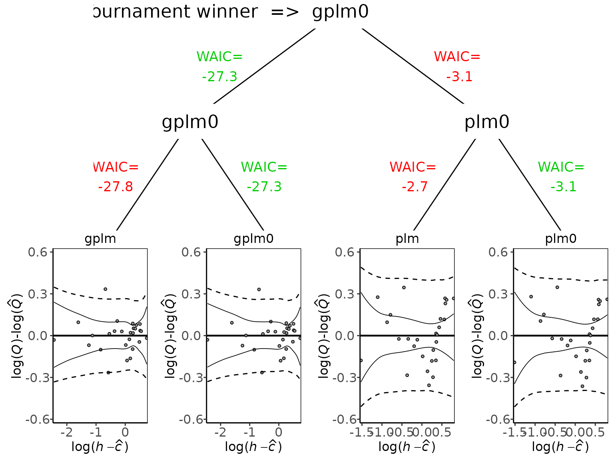
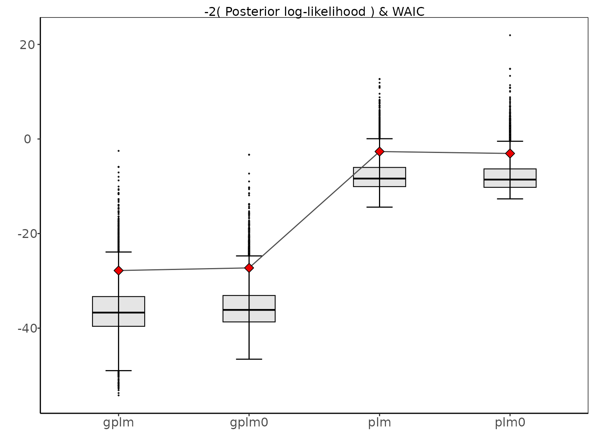
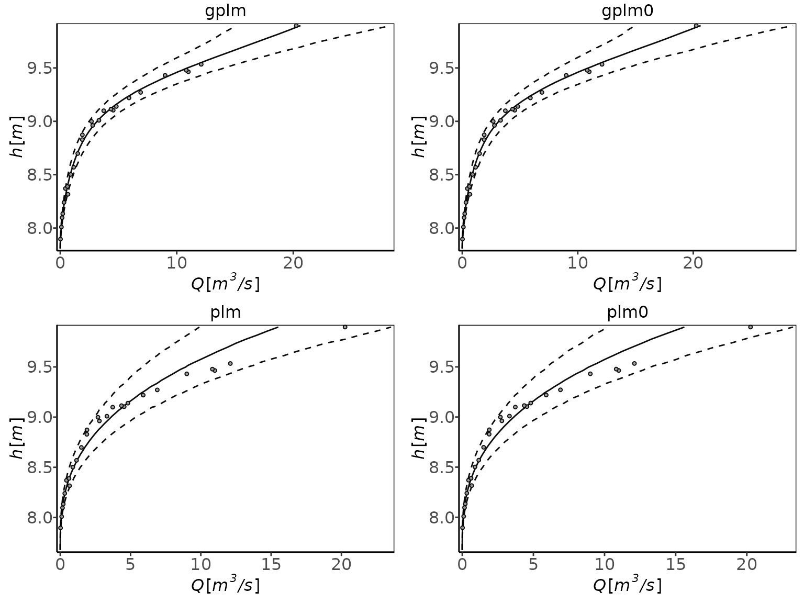
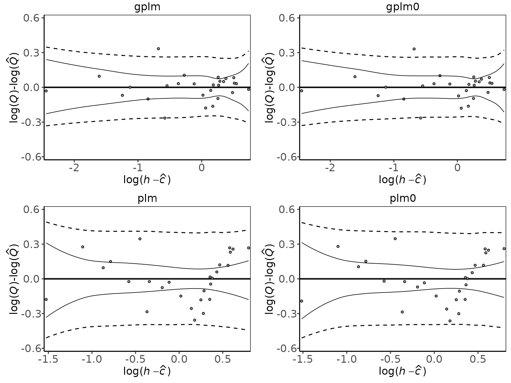
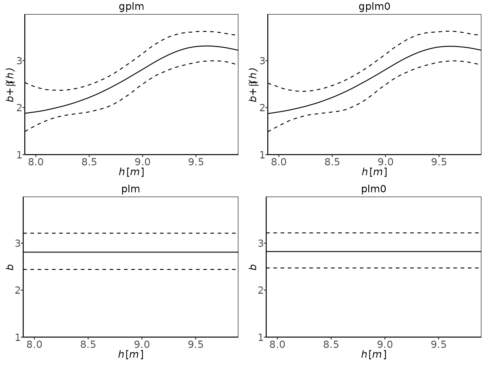
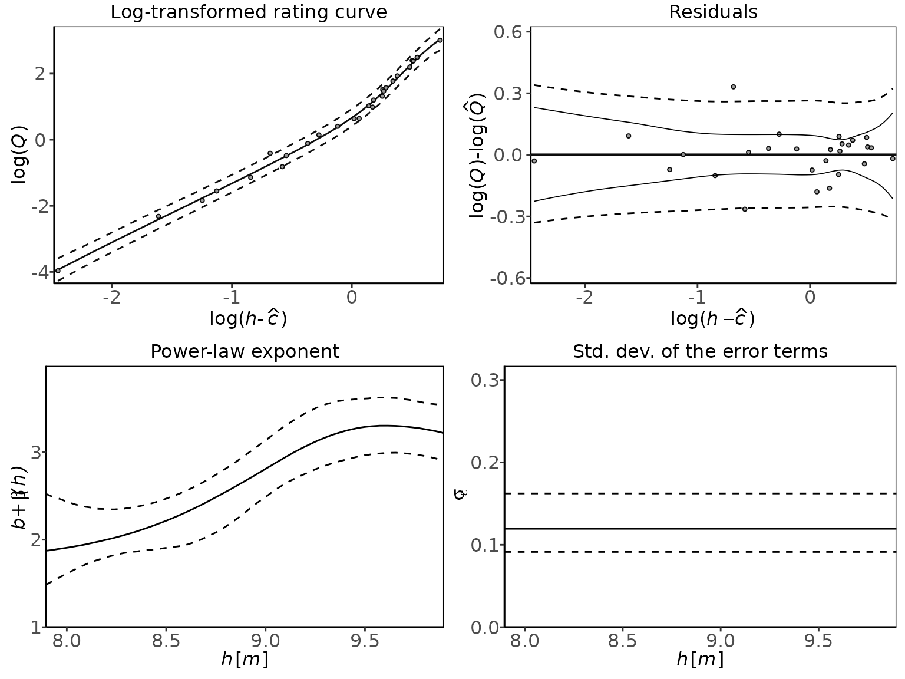

vignettes/tournament.Rmd
tournament.RmdThis vignette explores the ways you can compare the fit of the different discharge rating curve models provided in the bdrc package. The package includes four different models to fit a discharge rating curve of different complexities. These are:
plm0() - Power-law model with constant variance (hence the 0). This is a Bayesian hierarchical implementation of the most commonly used discharge rating curve model in hydrological practice
plm() - Power-law model with variance that may vary with stage
gplm0() - Generalized power-law model with constant variance (hence the 0)
gplm() - Generalized power-law model with variance that may vary with stage
To learn more about the four models, see Hrafnkelsson et al. To learn about how to run the models on your data see the introduction vignette. The tournament function allows you to compare the fit of these four models on the same data and determine which one suits best to the river you are analysing. The tournament is a set of two rounds. The first round consists of two games, one where plm0 and plm are compared and the other where gplm0 and gplm are compared. The winner of each of the two games in round 1 qualify for round 2 where the remaining two models are compared and the winner determined. The comparison of two models is performed by computing the Bayes factor and subsequently the probability of each model given the data. There is a hierarchy in complexity of the models s.t. plm0 < plm < gplm0 < gplm in terms of complexity. For a more complex model to win a game of two models, the probability of model given data must by larger than 0.75. This favors the simpler model except when there is overwhelming evidence of the benefit of the more complex model. As in the introduction vignette, we will use a dataset from a river called x in Sweden that comes with the package:
> data(kallstorp)
> kallstorp
#> W Q
#> 1 22.398 0.00260
#> 2 22.431 0.01150
#> 3 22.483 0.04800
#> 4 22.486 0.06710
#> 5 22.520 0.16400
#> 6 22.528 0.12000
#> 7 22.541 0.18800
#> 8 22.554 0.19200
#> 9 22.559 0.17300
#> 10 22.585 0.36200
#> 11 22.623 0.40100
#> 12 22.639 0.59000
#> 13 22.642 0.70200
#> 14 22.642 0.67738
#> 15 22.657 0.70357
#> 16 22.660 0.70600
#> 17 22.661 0.70300
#> 18 22.678 0.77400
#> 19 22.689 0.75900
#> 20 22.736 1.63800
#> 21 22.761 1.42800
#> 22 22.761 1.42000
#> 23 22.776 1.89700
#> 24 22.800 1.85200
#> 25 22.813 2.47160
#> 26 22.813 1.94800
#> 27 22.819 2.35200
#> 28 22.833 2.11000
#> 29 22.840 2.59850
#> 30 22.863 2.95200
#> 31 22.870 2.76600
#> 32 22.905 3.59000
#> 33 22.908 3.35000
#> 34 22.945 4.33325
#> 35 22.985 4.88000
#> 36 23.017 5.54200
#> 37 23.043 6.15100
#> 38 23.131 7.04000
#> 39 23.134 7.47900
#> 40 23.209 8.23800
#> 41 23.241 9.18400
#> 42 23.278 9.25100
#> 43 23.290 9.02000
#> 44 23.346 10.28600
#> 45 23.439 10.59400
#> 46 23.440 11.86000
#> 47 23.447 11.85000
#> 48 23.700 15.93000
#> 49 23.810 18.39400
#> 50 23.892 22.60000
#> 51 23.923 22.10000
#> 52 23.924 21.60000The tournament function is easy to use. All you need are two mandatory input arguments, formula and data. The formula is of the form y~x where y is discharge in \(m^3/s\) and x is stage in \(m\) (it is very important that the data is in the correct units). data is a data.frame which must include x and y as column names. In our case, in kallstorp, a column named Q includes are discharge measurements and W the stage measurements. We are ready to run our first tournament:
> set.seed(1)
> t_obj <- tournament(Q~W,kallstorp)
#> Running tournament:
#> 25% - gplm finished
#> 50% - gplm0 finished
#> 75% - plm finished
#> 100% - plm0 finishedThe function both runs the four models for you and runs the tournament. It’s worth mentioning that if you have already run your models of the four different kinds, plm0, plm, gplm0 and gplm and stored them in objects plm0.fit,plm.fit,gplm0.fit and gplm.fit, you can alternatively run the tournament very efficiently in the following way:
The printing method is very simple and gives you the name of the winner
For a more detailed summary of the results of the tournament write
> summary(t_obj)
#> round game model B DIC num_eff_param P winner
#> 1 1 1 gplm 3.141381e+05 -36.44125 6.962144 9.526369e-01 TRUE
#> 2 1 1 gplm0 1.561829e+04 -23.26455 6.545036 4.736312e-02 FALSE
#> 3 1 2 plm 8.600061e-11 44.24657 2.983424 6.622162e-01 FALSE
#> 4 1 2 plm0 4.386726e-11 45.36156 3.321142 3.377838e-01 TRUE
#> 5 2 3 gplm 3.141381e+05 -36.44125 6.962144 1.000000e+00 TRUE
#> 6 2 3 plm0 4.386726e-11 45.36156 3.321142 2.220446e-16 FALSENotice here that in round 1, plm was the winner in the first game and gplm in the second. Finally plm was favoured in round 2 and thus determined the tournament winner, the most adequate model for the data at hand.
To visualize the results from the tournament first we can plot the deviance posterior distribution of the different models. The deviance of an MCMC sample is defined as 2 times the negative log-likelihood of the data given the values of the sampled parameters, thus lower values imply a better fit to the data. From this distribution, DIC and B are calculated. DIC is a metric on the fit of the models taking their complexity into account (number of effective parameters). B is used to calculate the Bayes factor between different models. To plot the deviance distribution we write

rating curves using the plot function
 Another useful plot is the residual plot

The main difference of te four models lies in the modelling of the power law exponent (\(f(h)\)) the variance on the data level (\(\sigma^2_{\varepsilon}\)). Thus it is insightful to look at the posterior of the power law exponent for the different models
 and the variance on the data level

There are ways to customize the tournament further. If the parameter of zero discharge, \(c\), is known and then you want to fix that parameter to the known value in the model. Assume 22.35 m is the known value of \(c\) and you want to run a tournament with c fixed for all models. Then you could write
> t_obj_known_c <- tournament(formula=Q~W,data=kallstorp,c_param=22.35)
#> Running tournament:
#> 25% - gplm finished
#> 50% - gplm0 finished
#> 75% - plm finished
#> 100% - plm0 finished
> summary(t_obj_known_c)
#> round game model B DIC num_eff_param P winner
#> 1 1 1 gplm 5.996590e+05 -37.27269 6.191729 0.82800497 TRUE
#> 2 1 1 gplm0 1.245625e+05 -24.90354 5.731345 0.17199503 FALSE
#> 3 1 2 plm 5.574082e-16 55.29870 3.353815 0.93752984 TRUE
#> 4 1 2 plm0 3.714162e-17 73.27583 2.256590 0.06247016 FALSE
#> 5 2 3 gplm 5.996590e+05 -37.27269 6.191729 1.00000000 TRUE
#> 6 2 3 plm 5.574082e-16 55.29870 3.353815 0.00000000 FALSEOne useful feature of the plot function is the panel option. This plots four different plots of the tournament winning model, which in this case is gplm:
